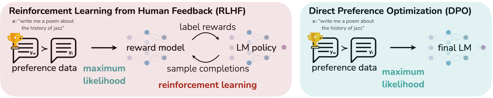

这篇是 Direct Preference Optimization: Your Language Model is Secretly a Reward Model的阅读笔记。
传统 RLHF 把学习人类偏好拆成两件事：先训练 reward model 学会打分，再用 PPO 让语言模型追求高分。DPO 则证明，在论文采用的数学假设下，这两件事可以合并成一次普通的语言模型训练。
方法
让我们跳过复杂的推导过程，直接看最终 DPO Loss 吧。
| 符号 | 含义 |
|---|---|
| πθ | 正在训练的语言模型，也叫策略模型。 |
| θ | πθ 中需要通过训练更新的模型参数。 |
| πref | 冻结的参考模型，通常是 DPO 训练开始前的 SFT 模型；它的参数不更新。 |
| x | 输入给模型的 prompt，也就是问题或上下文。 |
| yw | 偏好数据中人类更喜欢的回答；下标 w 表示 winner。 |
| yl | 偏好数据中人类不喜欢的回答；下标 l 表示 loser。 |
| 𝒟 | 偏好数据集；每条数据都是一个三元组 (x, yw, yl)。 |
| log(πθ / πref) | 当前模型相对参考模型对某个回答的偏好变化：值越大，表示当前模型比参考模型更愿意生成该回答。 |
| β | 控制模型偏离参考模型程度的正超参数；它来自原始目标中的 KL 约束，越大通常表示约束越强。 |
| −log σ(·) | 负对数损失；当模型更偏向 yw 而不是 yl 时，这个损失会变小。 |

查看原图 ↗DPO 训练 Pipeline
- 准备模型：从同一个 SFT 模型得到两份模型。πref 作为冻结的参考模型，πθ 作为需要更新的策略模型。
- 准备偏好数据：对于每个输入 x，收集两个回答并由人类选出更好的回答 yw 和较差的回答 yl，组成数据集 𝒟 = {(x, yw, yl)}。
- 直接优化策略模型：分别计算 πθ 和 πref 对 yw、yl 的概率，代入上面的 DPO 损失并反向传播，只更新 θ。训练完成后的 πθ 就是最终模型。
实验
论文按难度逐步验证三个问题：它能否正确优化 RLHF 目标、能否处理真实人类偏好、能否迁移到训练分布之外。
| 要回答的问题 | 实验设置 | 主要结果 |
|---|---|---|
| 1. DPO 真的会兼顾奖励和 KL 吗？ | IMDb 情感控制；GPT-2-large；情感分类器提供已知奖励 | DPO 得到最优的 reward–KL 前沿。论文报告其权衡优于 PPO，甚至优于直接使用真实奖励的 PPO-GT。 |
| 2. 面对真实偏好数据还有效吗？ | Reddit TL;DR 摘要；同一个 GPT-J SFT 起点；GPT-4 评价 | 温度为 0 时，DPO 对参考摘要的胜率约为 61%，PPO 的最佳结果约为 57%。DPO 对采样温度也更稳定。 |
| 3. 对话任务上表现怎样？ | Anthropic HH 单轮对话；Pythia-2.8B；170k 条带偏好标签的对话 | DPO 是实验中唯一超过测试集 preferred responses 的计算高效方法，并达到或超过 Best of 128 的最佳表现。 |
| 4. 换一种输入还能工作吗？ | 把 TL;DR 训练出的策略直接用于 CNN/DailyMail 新闻摘要 | 温度为 0 / 0.25 时，DPO 胜率为 0.36 / 0.31，PPO 为 0.26 / 0.23。这只是初步的分布外证据。 |
这些结果应该怎样理解？
在论文的实验范围内，DPO 用更简单的训练链路取得了与 PPO 相当或更好的结果。TL;DR 的人工比较也显示，DPO 回答有 58% 的时候胜过 PPO 回答。这支持了论文最核心的判断：偏好学习不一定非要经过“显式奖励模型 + 强化学习”。
但这些实验不能证明 DPO 在所有任务上都优于 PPO。论文测试的模型最大为 6B 参数；摘要和对话主要由 GPT-4 评价，而且作者发现评价 prompt 会影响结果；CNN/DailyMail 也只提供了一次有限的分布外测试。
DPO 还继承了偏好数据本身的限制。如果标注者因为回答更长、语气更礼貌而选择 A，模型可能把这些表面特征学成“偏好”。Bradley–Terry 假设还把复杂的人类判断压缩成一个分数差，无法完整表示标注者之间的分歧或互相矛盾的价值。